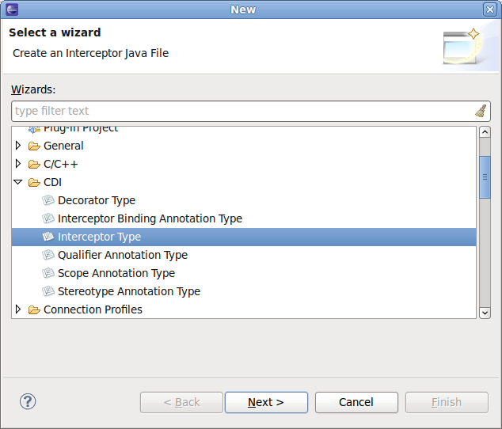
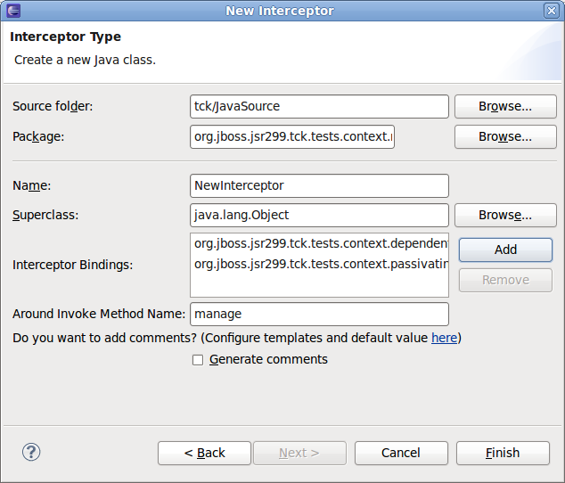
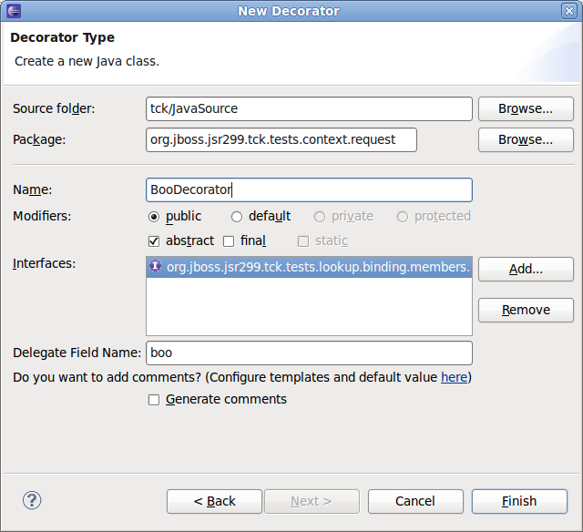
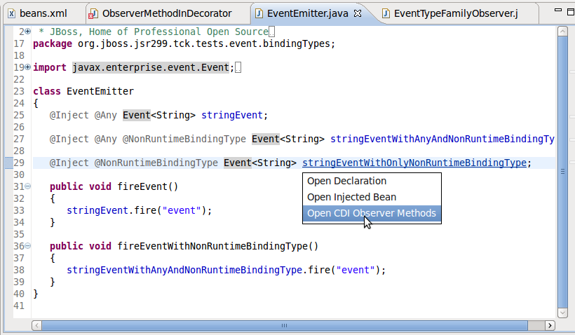
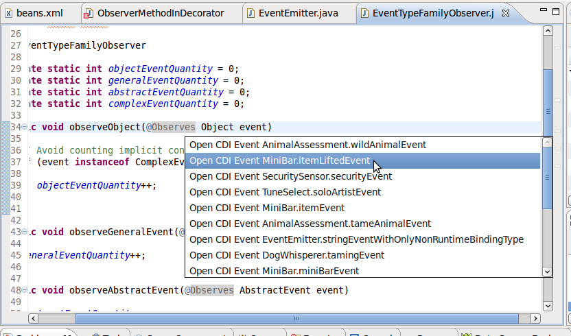
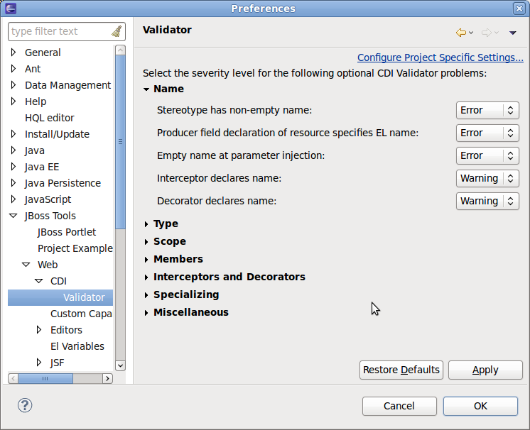
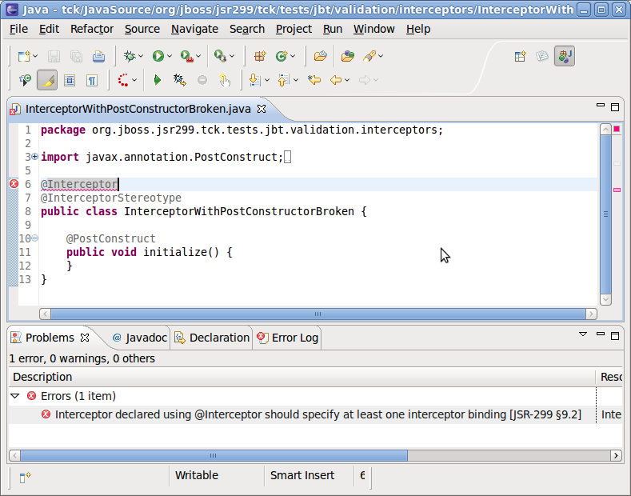
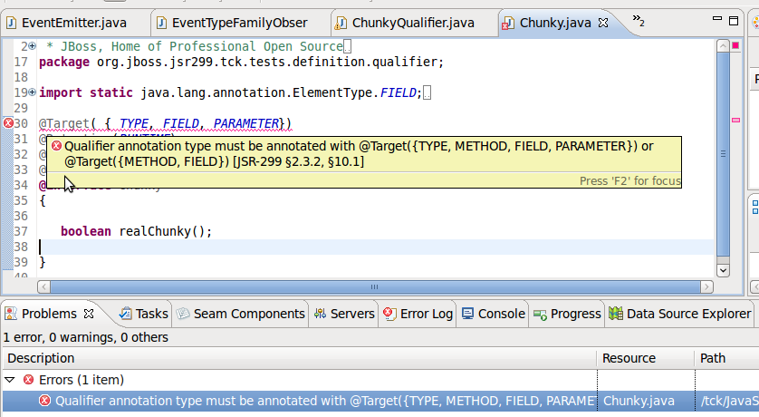

< Main Index Seam Tools News >
Wizards |
|
|
New Interceptor/Decorator Class Wizards |
There are two new Wizards to easily create Interceptor and Decorators classes. New Interceptor Class Wizard: New Decorator Class Wizard:  |
Hyperlinks (OpenOns) |
|
|
OpenOn for Observers and Events |
Observers and Events can now be navigated to via OpenOn.  |
Project Validation |
|
|
CDI definition error validation. |
All the defenition errors described in JSR-299 Specification (more than 70 validation rules) are now validated.  Notice that the validator warning/error reference the section of the JSR-299 specification it relates to. |
|
CDI annotation types validation. |
Now CDI tools validate targets for CDI Annotation Types such as Stereotype/Scope/Qualifier.  |
|
CDI Validator Settings at Project level. |
It's possible to enable/disable CDI validator at project level. See "Project->Properties->CDI Settings->Validator->Enable project specific settings". |
|
|
|